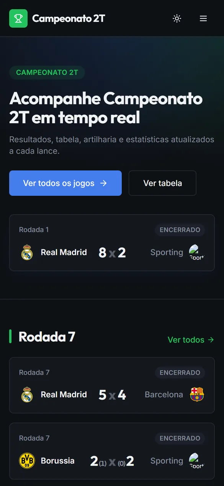
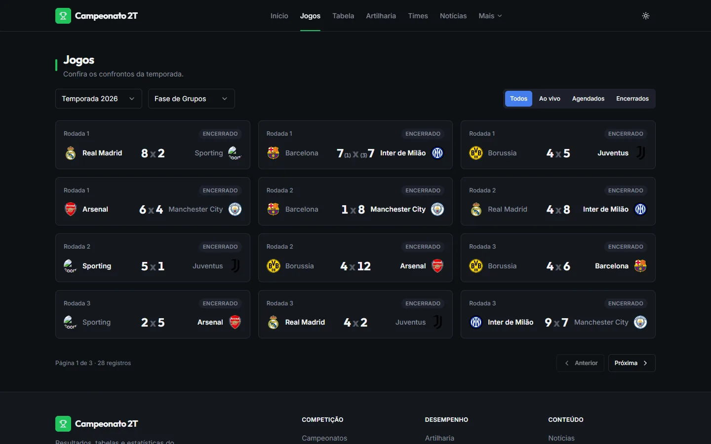
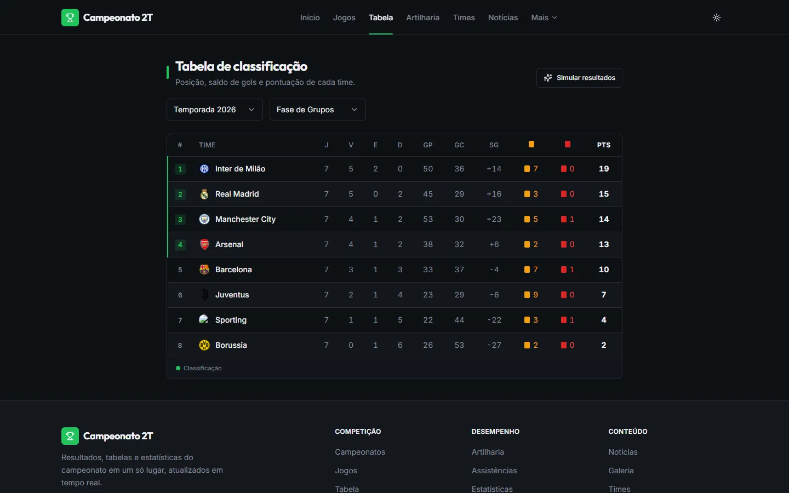
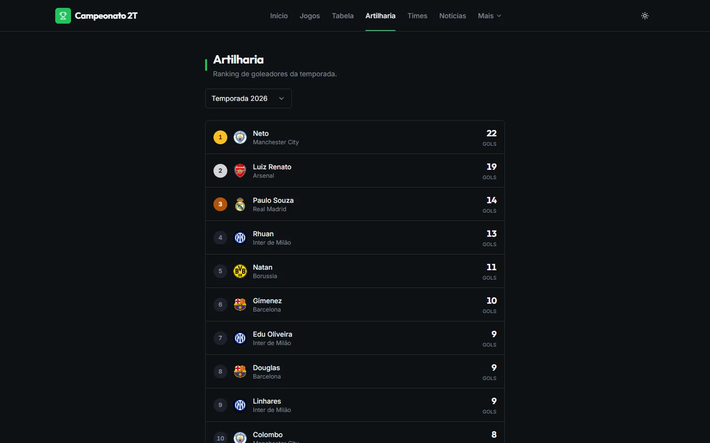

2T · esporte
Campeonato 2T




Site oficial do campeonato da 2T: jogos, tabela, artilharia, times e notícias, atualizados durante a rodada.
Roda sobre a LigaPro, a plataforma de campeonatos que construí: várias organizações isoladas, partidas ao vivo por WebSocket, suspensões automáticas por cartão e painel para a organização.
- Cliente
- 2T
- Setor
- Esporte
- Stack
- NestJS, Prisma, PostgreSQL, Redis, Socket.IO, React 19, Docker
No ar: abrir o site
Ajustado 09/2026